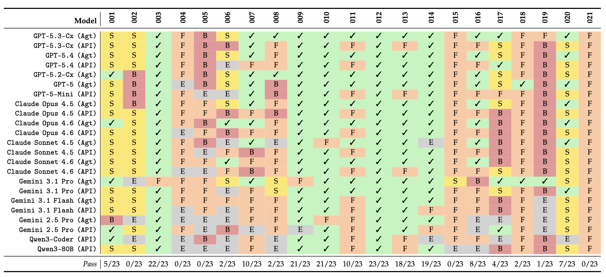

Overview
Why NITR exists
Existing coding-agent evaluations often stop at pass/fail correctness. In practice, however, a repository edit can pass the target tests while still making the codebase harder to extend, test, or reason about.
NITR turns this gap into an executable benchmark. Each case is a small repository scenario with a natural engineering request, a maintainable solution path, and a plausible shortcut path. Public evaluators combine functional tests with structural oracles, so the benchmark measures both whether the task works and whether the resulting design remains healthy.
Results
Performance drops sharply when structure matters

Pass/fail heatmap of 23 evaluated configurations across the 21 NITR cases.
Best overall pass rate
57.1% of cases.
Average across all systems
36.2% of cases.
Micro vs. multi-step
53.5% on micro cases, but only 20.6% on multi-step cases.
Hardest pressures
Dependency control and responsibility decomposition remain the biggest failure surfaces.
Benchmark Design
What the benchmark contains
Repository contents
- 21 starter cases under
cases/ - Case specifications and design notes under
docs/ - Public evaluator logic under
evaluator/ - Agent-facing task statements such as
TASK.mdandTASK1.md
Maintainability pressures
- Change locality
- Reuse and repository awareness
- Responsibility decomposition
- Extension structure and dependency control
- Testability, determinism, and side-effect isolation
- State ownership and lifecycle discipline
Usage
How to run NITR
The public release does not include a hosted submission service. In the open benchmark, a submission means editing the selected case locally and running the provided public evaluator.
This works equally well for API-based coding agents, agentic coding tools, and web-chat systems, as long as you apply the generated edits back into the repository before evaluation.
cmake -S . -B build \
-DNITR_BUILD_ALL_CASES=OFF \
-DNITR_CASE=002.refactor-and-resue \
-DNITR_BUILD_EVALUATOR=ON
cmake --build build
ctest --test-dir build --output-on-failureCitation
BibTeX
@misc{zhu2026nitr,
title = {Needle in the Repo: Diagnosing Maintainability Failures in AI-Generated Repository Edits},
author = {Haichao Zhu and Qian Zhang and Jiyuan Wang and Zhaorui Yang and Yuxin Qiu},
year = {2026},
eprint = {2603.27745},
archivePrefix = {arXiv},
primaryClass = {cs.SE},
url = {https://arxiv.org/abs/2603.27745}
}